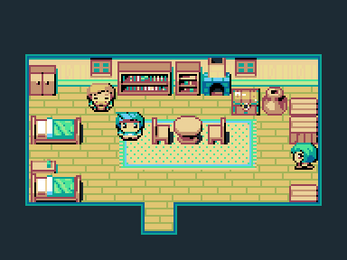
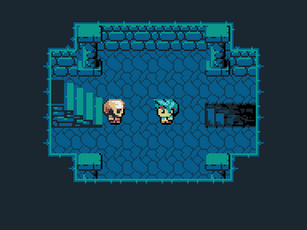
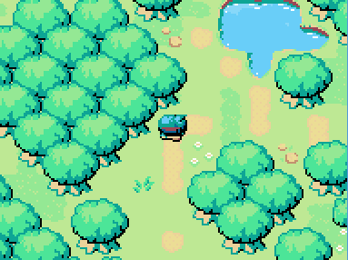

Almost Heroic
Un RPG classique réalisé pour le Ludum Dare 33Almost Heroic est un jeu de type RPG (classique) réalisé durant la Ludum Dare 33, le weekend du 22 au 24 Août 2015. Le jeu a été réalisé en approximativement 72 heures avec le logiciel RPGMaker VXAce (ce qui implique malheureusement que le jeu ne fonctionne que sous Windows… hélas) et le script RME.
L’ensemble des systèmes de jeux, les graphismes, la musique, les dialogues et les niveaux ont étés conçus durant la Jam. Le travail a été répartit entre plusieurs intervenants :
- Joke : ensemble des graphismes, effets sonores et level design ;
- Zangther : programmation du système de combat ;
- Neha : composition des musiques ;
- Moi : level design, programmation des systèmes et l’écriture.
Le jeu a été plutôt bien reçu (il a été classé 60ème sur plus de 2000 participants) principalement grâce aux graphismes et à la musique. Tout le contenu du jeu est distribué librement (les liens sont donnés en pied de page).
  